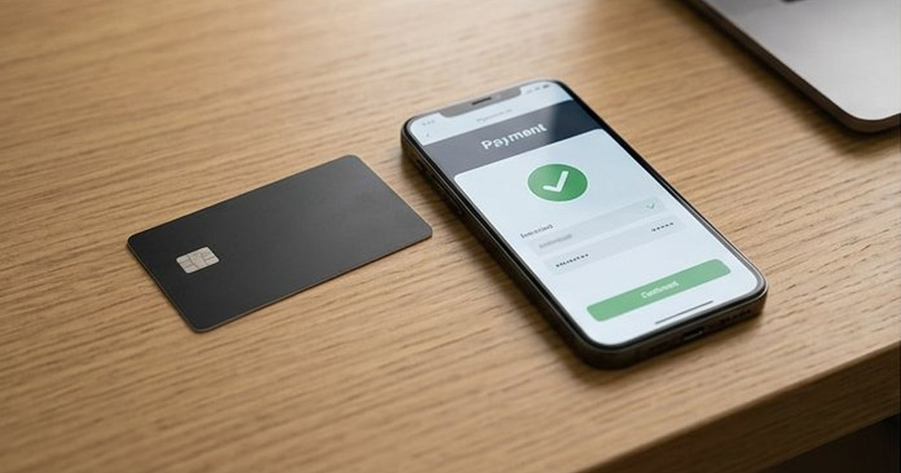

دليل حماية الحسابات
منع الاختراق والاسترداد والدفع الإلكتروني الآمن بخطوات قابلة للتطبيق.
كيف تستخدم الدليل؟
- ابدأ بالمقال الأقرب لمشكلتك الحالية.
- طبّق قائمة التحقق وسجل النتيجة.
- انتقل للمقال التالي عند الحاجة بدل تغيير أشياء كثيرة دفعة واحدة.

تكنولوجيا
خطة استرداد الحسابات قبل الاختراق: ورقة عمل عملية
خطة عملية لتجهيز بريد الاسترداد ورموز النسخ الاحتياطية والأجهزة الموثوقة وترتيب الحسابات قبل فقد الهاتف أو التعرض للاختراق.

تكنولوجيا
أساسيات حماية حساباتك على الإنترنت: دليل عملي للمبتدئين
دليل حماية الحسابات من الاختراق: كلمات مرور فريدة، مدير كلمات المرور، المصادقة متعددة العوامل، مفاتيح المرور وخطة استرداد الحساب.

تكنولوجيا
الدفع الإلكتروني بأمان: دليلك الكامل لحماية أموالك
دليل الدفع الإلكتروني بأمان: فحص المتجر، حماية البطاقة، تجنب التصيد، التصرف بعد عملية مشبوهة وحفظ أدلة الشراء.

تكنولوجيا
الذكاء الاصطناعي ببساطة: ما هو وكيف يعمل؟
شرح مبسط ودقيق للذكاء الاصطناعي: التدريب والاستدلال والذكاء التوليدي والأخطاء والخصوصية وكيفية استخدام الأدوات بوعي.